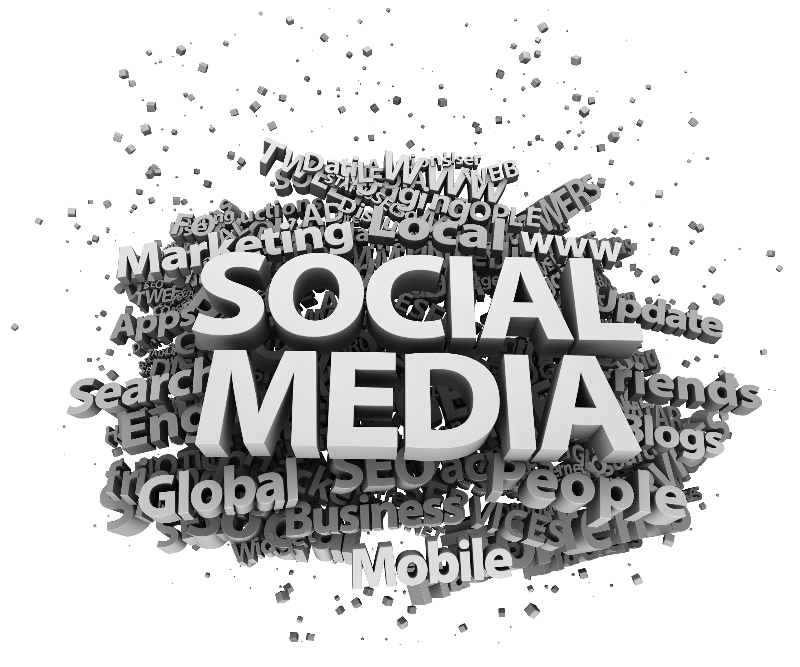

Research-Media Now
The city where I grow up named Changsha, which is filled with the new media culture. I’ve always considered the new media culture so active in that city it is the main reason for me to make the decision on my major, media information and communication. My first impression about media, are all about fine movies, funny TV talk show and impressive poster or advertisements, or I can say in anther easy understanding way, media is all the things can make your spare time not that boring and bring interesting ideas to your life. But after the time I grow up a little, I start to realize that media actually turns out to have huge power in it. It is not only the message sending out process, but also have the power to leads the public thinking and concerns. I’m so fascinated with how much media can combine and creates different things so finally I choose my college major to be this.
Why would you take this major? This is the sort of question I will hear from people around me all the time. Media information compares to other economic and business major is such an uncommon choice for most of international student. So why would I take media information to become my major and I may work with such things for a lifetime, what can I really learn by taking this major and what kind of person I will be after I graduate and then start to working in my career field. What do you know about new media? Since this era we are living in has been called the new media era for a while already. Some may say the new media is such as the Internet, within the Internet speed of messages spread as fast as the light speed. I can’t totally agree wit this, from my own understanding about new media, it is kind thing, which gives the message ability to spread out faster and faster, and then the new media also have the huge influence in society. After one year studying in this major, I start to see many questions much clearly.
Media information and communication is a challenging major for students. They all require really good ability to write and to express thoughts and feelings. “Also you better be pretty creative. Otherwise TV shows and movies might get boring after generations, and no one wants that to be true.” Said by professor Wei Peng. As an associate professor major focus in games and meaningful play, Wei Peng is a really outgoing person. I’ve attended to one of her research group once. Basically just by playing some new games and recording student’s feed back about the new game been test. The goal of this program is to find out the function backwards by game tester, us. I had a really good experience by doing this research. Professor Wei Peng told me she enjoys every times interviews too. “ To finish such program, technical issue will not be the only problem, you will also need to know how to do the interpersonal communication with the testers so you can make sure you get the perfect feedback.”(Peng)
An important part I need to learn in Media information, advertising is definitely an interesting class to take. There are two main parts to make a successful advertisement. First one will be the design part; you need to come up an idea about what you going to do to promote a product or an idea. Then here comes to the second part, to write a situation analysis, it will help complete your whole project and make it to be a real finished advertisement. In my ADV260 class, there is one important group project we need to finish in this semester. It is by given one topic with a situation, our group needs to find some way to make one old band to become famous and popular again. To write a successful situation analysis, one thing need to be remembering it’s not to write some thing that same as a normal scholar essay. Instead of that, you need to have some thing called persuasion, shorter than the normal essay and easy for all the reader to understand, so that you can make sure it is perfectly functional. Writing in advertising is all about propaganda. You need to have something attracts people to read, drags publics attention, make it easy understanding and remember able. Professor Wei Peng says “ You job to make a promotion successful enough is to left a strong enough first impression, which is to use the power of words.” So the following is my project’s situation analysis I’ve just finished last week as an example for how writing function in advertising. Basic on this, you can see how the advertising project requires writing skills with good interpersonal communication skills.
Situation Analysis
Main goal: To get Gun & Rose famous again.
Background: They were popular during 1980-1990. Top band, relatable.
Media Targets
• Sway Calloway
o Reporter and executive producer for MTV news
• MTV is mainly about music, this will help us reach out to new fans as well as update old ones.
o Co-host of The Wake Up Show
• Jim Cantiello
o TV personality
o News correspondent for MTV
o Can help to report on Guns n’ Roses to reach out to new fans
• Steve Smith
o NY Times
• Music sections
• NY is a large market
• Can help gain new fans and update old ones
• Rolling Stones Magazine
o Targets a lot of original fans
o One of the top music magazines
• Barrymore Laurence Scherer
o WSJ entertainment and arts
Objectives
• Gain more exposure:
o More exposure means more business and more money. If you don’t have any business then you won’t make money and won’t be very successful.
• Reach a younger fan base/reconnect with original fans:
o Original fans may not be as interested since most of the original members are not in the band anymore, so we need to show them that Guns n’ Roses is still musically significant. It is also key to gain new fans because attaining new business and support is imperative to staying relevant in the music industry.
• Become more relevant in today’s music industry
o Being relatable and known in the industry leads to more success and ultimately gaining more business and having more fans.
Strategies
• VH1 Save the Music Foundation
o Reaches out to new fans by gaining exposure and showing that they are still relevant in the community.
• Bonaroo/Lollapalooza
o Helps to reconnect with original fans as well as gain younger ones. Also showing the original fans that the new members have brought new talent to the band.
Target Audience
1) The generation who grown up in 1980’s-1990’s, were the original fans when the band founded.
2) Teenager, who think the old fashion things are cool and attractive. Always interested in rock n roll.
For the propagandize suggestion:
We should pay attention to use the power of Internet.
E.g. Setting up the face book group. Or create event about “Gun n Rose is back”.
Encourage old fans to show how crazy they’ve love the band at the old time. Post their old collection of Gun & Rose on their Facebook. Post photo of their old album, photo of Gun n Rose’s concert. Meanwhile it can gain more exposure and also let younger people get to know more about the band.
Or we can put some short video on YouTube. Which contains some most memorized moment of the band tour history.

Advertising in performance forms is a cooperation service for products of publicity, and a kind of commercial marketing means. Even more, the connotation of advertising is a reflection of culture. A Successful advertisement does not often expose its true message; instead, the company cleverly hides its business motivation and commercial properties to attract and inform consumers about their products. To achieve this goal, advertising needs to apply literature and art, as well as uses all sorts of rhetoric and narrative techniques to package advertisement. One type of advertising, called subliminal advertising, which is particularly prominent, had been introduced in my ADV260 class. Wilson Bryan Key, Ph.D., the author of several books about subliminal advertising and subliminal messages, promotes the notion of subliminal advertising, “to seduce consumers, advertisers intentionally create ads with sexual messages hidden in the illustrations”. Such CHE magazine, BMW, and anti-smoking subliminal advertisings are the use of instinct sexual desire to manipulate and attract consumers, and this kind of phenomenon is making our culture even more stagnant. Advertising as a type of media means strongly attaches to marketing. Other than manipulating us through brainwashing ads, subliminal advertising is blatant using human instinct to attract consumers. For example, the advertisement for BMW integrates sexual visual imagery without placing much emphasis on the product itself (the car). This kind of commercial is always makes a huge success on attracting people’s attention.
“The landscape of the media is changing - and at an ever-increasing pace. New technologies are fast transforming the way we consume information, and the way we live our lives.” by Professor Gerard Goggin. Just like professor Goggin said, the new media is not all about creative ideas at all, it also combines with the creative and brand new ways to spread those idea to people, which construct by new technologies. New Technologies and the Media is an authoritative exploration of the impact of the Internet, the iPad, and Wikileaks on contemporary news, journalism and broadcasting. Back to 10 years ago, can anyone imagine that there is nothing we cannot do by our phone in nowadays? The new media with all upcoming new technologies had just gradually changed our life and the whole society’s way to accepting news and respond. In any class of CAS (college of communication art and science) you can always find computers and projector. Lessons are relying on these two things. Otherwise it will be a problem for teacher how to keep the information in a good amount and quality to students during the class. In some specific design class such as CAS101, InDesign Photoshop are basic programs you need to know before you take the class. Since new technology is always impartible part of design. Some students in our field might need to know more technologies skills since they might focus on games and meaningful play. There are a lot more programs need to learn.
“New media also plays a significant role in social use of interpersonal communication technologies”. (Petric, Gregor, Petrovicic, Vehovar) It can be discerned in today's complex media environment, in which people have many channels available for interpersonal communication. We are living in a world full filled with new media influences, new media is like the cell of the world, implanting our life, work, study, leisure and entertainment in every aspect. Our eyes cannot avoid the colorful ray from the mediator ears cannot shut down for the voice of news, information, and concepts from all directions.